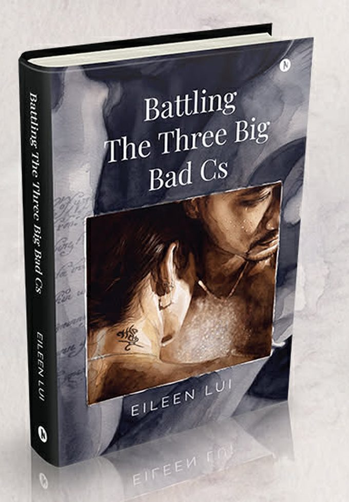

Eileen Lui / Book
Out now — first bookBattling The Three Big Bad Cs
This is not a grief guide. This is what grief actually looks like.
A memoir by Eileen Lui about three catastrophes that arrived within a few short years of each other — a global pandemic, Myanmar's military coup, and the cancer that took the love of her life — and about the grief that began long before the death did.
- Author
- Eileen Lui
- Genre
- Memoir · Biography & Autobiography
- Publisher
- Notion Press
- Pages
- 216
- Published
- August 2026
- Language
- English
- ISBN
- 9798906432872
- Formats
- Paperback · Hardcover · Ebook
- Themes
- Myanmar coup · Cancer caregiving · Grief
About the book
Covid. Coup. Cancer.
Eileen never imagined those three words would redefine her life. Within a few short years, a global pandemic, Myanmar's military coup and cancer dismantled everything she believed she could rely on: certainty, purpose, strength and ultimately, the love of her life.
Some people think grief begins with death. Sometimes it begins long before, through a thousand moments of fear, helplessness and heartbreak that still don't quite prepare us for the loss we hope will never come.
When that loss finally arrived, everything Eileen had relied on to survive — her discipline, her resilience, her "Olympic-gold-medal mindset" — was no longer enough. She wrote this memoir from the depths of that darkness, not because she had found the answers, but because she hoped others might feel less alone in their own murkiness.
This is an honest account of love, loss and struggling through the unimaginable. Because when grief overtakes us, each of us is carried by it differently.
Why I wrote it
He believed before I did.
Back in 2016, my husband told me he'd invest a sum of money for me to quit my job and write my book. That was how much he believed in me. I didn't believe in myself enough to take up the offer.
Well, finally here it is. Not the original idea. Not a potential bestseller.
But I wrote it because he believed. Eileen Lui
Who this book is for
Three kinds of reader.
The Myanmar diaspora
For those who carry Myanmar in their hearts, wherever they are — and who watched the country come apart from a distance they never chose.
Anyone battling cancer in a broken system
For patients and carers navigating treatment inside a system that prioritises "defensive medicine" over the person in front of it.
Anyone grieving without a clean answer
For anyone who has suffered a great loss and has no tidy explanation for grief, or for suicide — and is tired of being handed one.
Questions people ask
About this book.
Battling The Three Big Bad Cs is a memoir by Eileen Lui about surviving three overlapping catastrophes — the Covid-19 pandemic, Myanmar's 2021 military coup and her husband's cancer — and the grief that began long before he died. It is a first-person account of caregiving inside a failing health system, of a country collapsing around her, and of what remains when discipline and resilience stop working.
The three big bad Cs are Covid, Coup and Cancer. The Covid-19 pandemic, Myanmar's February 2021 military coup and a cancer diagnosis arrived within a few short years of each other and dismantled the author's certainty, purpose, strength and ultimately her marriage.
No — it is a memoir, not a grief guide. There are no stages, no framework and no clean answers in it. Eileen Lui wrote the book from inside the darkness rather than from the far side of it, so that readers in the middle of their own loss feel less alone rather than instructed.
Yes. Myanmar's February 2021 military coup runs through the book as lived experience rather than reportage. It shows what the coup did to ordinary daily life — to hospitals, banking, travel, communication and the simple ability to get a seriously ill person treated — and what it meant to belong to the Myanmar diaspora while home came apart.
It is written for the Myanmar diaspora and anyone who carries Myanmar with them; for people facing cancer inside a health system that practises defensive medicine; and for anyone who has suffered a great loss and has no clean answer for grief or for suicide. Caregivers, recently bereaved partners and readers of honest, unresolved memoir will recognise themselves in it.
In print, the book is available from Notion Press and from Amazon in the US, India and the UK, in both paperback and hardcover. The ebook is available on Kobo. Amazon Kindle and Flipkart editions are on the way. ISBN 9798906432872.
Battling The Three Big Bad Cs was published in August 2026 by Notion Press. It runs to 216 pages in print, is written in English, and is available in paperback, hardcover and ebook editions. Its ISBN is 9798906432872.
Eileen Lui is a multilingual strategic communications leader with more than twenty years of experience across Southeast and East Asia, and a published writer whose work has appeared in the New Straits Times, the Myanmar Times and the Silverfish Best 25 Short Stories anthology. Battling The Three Big Bad Cs is her first book. Read more about her work.
A note before you start. This book deals openly with terminal illness, bereavement and suicide. If any of that is close to home for you right now, read it gently, and at your own pace.
Where to buy
Available now.
Paperback, hardcover and ebook. Pick whichever store is closest to you.
Amazon Kindle and Flipkart editions are on the way.
Published August 2026 · Notion Press · ISBN 9798906432872 · 216 pages · English
Upcoming releases
There's more coming.
The next one is already taking shape. If you'd like to know when it lands — or you want to talk about this one — the door is open.